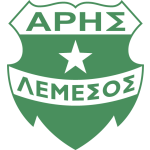
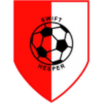
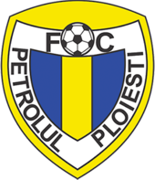

比赛列表
共 2222 场1818 场88 场1178 场097 场068 场094 场0246 场0299 场0106 场
胜平负队名旁为近 5 场
11/30 · 0 场106 场未开赛
17:00国际赛CyprusVS卢森堡女足仅赛程
19:00乌克兰超级联赛库德里夫卡 VS哈尔科夫仅赛程
VS哈尔科夫仅赛程
19:00亚美尼亚超级联赛萨尔达拉帕特VS亚拉腊仅赛程
19:30印度超级联赛东北联 VS旁遮普仅赛程
VS旁遮普仅赛程
20:05沙特甲级联赛安瓦尔 VS祖尔菲仅赛程
VS祖尔菲仅赛程
20:35沙特甲级联赛奈季兰沟渠 VS哈杰尔仅赛程
VS哈杰尔仅赛程
20:45伊朗波斯湾职业…戈尔戈哈尔 VS法吉尔塞帕西仅赛程
VS法吉尔塞帕西仅赛程
21:25沙特国王杯欧鲁巴赫VS奈季兰沟渠仅赛程
21:25沙特国王杯贾巴莱因 VS
VS 吉达联合仅赛程
吉达联合仅赛程
22:15卡塔尔乙级联赛赖扬B队VS 阿尔比达仅赛程
阿尔比达仅赛程
23:00亚美尼亚超级联赛甘扎萨尔VS阿拉什凯特仅赛程
23:15沙特甲级联赛麦加统一 VS奈季马仅赛程
VS奈季马仅赛程
00:00乌克兰超级联赛喀尔巴阡 VS
VS 波利西亚仅赛程
波利西亚仅赛程
00:00南非超级联赛塞库胡内联VS西韦莱莱仅赛程
00:00土超费内巴切VS 埃尔祖鲁姆体育仅赛程
埃尔祖鲁姆体育仅赛程
00:00奥超萨尔茨堡红牛 VS
VS LASK林茨仅赛程
LASK林茨仅赛程
00:00安道尔甲级联赛奥尔迪诺VS圣科洛马仅赛程
00:00希腊超级联赛2卡利费亚 VS
VS 扎金索斯仅赛程
扎金索斯仅赛程
00:00希腊超级联赛2卡尔迪萨复兴 VS
VS 奥林匹亚B队仅赛程
奥林匹亚B队仅赛程
00:00希腊超级联赛2帕尼奥尼奥斯VS 克里苏波利斯内斯托斯仅赛程
克里苏波利斯内斯托斯仅赛程
00:00希腊超级联赛2庞托斯阿波罗VS 潘斯拉基科斯仅赛程
潘斯拉基科斯仅赛程
00:00希腊超级联赛2潘塞莱科斯 VS
VS 皮尔戈斯1968仅赛程
皮尔戈斯1968仅赛程
00:00希腊超级联赛2特里波利斯之星B队VS沃洛斯尼基仅赛程
00:00希腊超级联赛2锡罗斯希腊人 VS
VS 拉里萨仅赛程
拉里萨仅赛程
00:00希腊超级联赛2马尔科 VSPAOK塞萨洛尼基B队仅赛程
VSPAOK塞萨洛尼基B队仅赛程
00:00挪超布兰VS 克里斯蒂仅赛程
克里斯蒂仅赛程
00:00挪超斯达VS 萨普斯堡仅赛程
萨普斯堡仅赛程
00:00挪超桑纳菲VS特罗姆瑟仅赛程
00:00西乙加的斯 VS
VS 科尔多瓦仅赛程
科尔多瓦仅赛程
00:00西乙埃尔登斯 VS
VS 赫罗纳仅赛程
赫罗纳仅赛程
00:00西乙埃瓦尔VS布尔戈斯仅赛程
00:00西乙奥维耶多VS 维戈塞尔塔B队仅赛程
维戈塞尔塔B队仅赛程
00:00西乙巴利亚多利德VS 皇家社会B队仅赛程
皇家社会B队仅赛程
00:00西乙拉斯帕尔马斯 VS
VS FC安道尔仅赛程
FC安道尔仅赛程
00:00西乙格拉纳达 VS
VS 休达仅赛程
休达仅赛程
00:00西乙莱加内斯 VS
VS 萨瓦德尔仅赛程
萨瓦德尔仅赛程
00:00西乙阿尔巴塞特 VS
VS 特内里费仅赛程
特内里费仅赛程
00:00西乙阿尔梅里亚 VS希洪体育仅赛程
VS希洪体育仅赛程
00:00西乙马洛卡VS 卡斯特利翁仅赛程
卡斯特利翁仅赛程
00:00黑山甲级联赛德西奇 VS苏捷斯卡仅赛程
VS苏捷斯卡仅赛程
00:15法甲图卢兹VS 雷恩仅赛程
雷恩仅赛程
00:30伊拉克联赛米桑石油VS 巴格达警察仅赛程
巴格达警察仅赛程
00:30德甲霍芬海姆 VS奥格斯堡仅赛程
VS奥格斯堡仅赛程
00:30斯洛文尼亚甲级…科佩尔VS 采列仅赛程
采列仅赛程
00:30波兰超华沙军团 VS克拉科夫维切斯塔仅赛程
VS克拉科夫维切斯塔仅赛程
00:30英超阿森纳 VS
VS 曼城仅赛程
曼城仅赛程
01:00丹麦超锡尔克堡 VS
VS 奥胡斯仅赛程
奥胡斯仅赛程
01:00克罗地亚甲级联赛哈伊杜克 VS
VS 鲁德什仅赛程
鲁德什仅赛程
01:00塞浦路斯甲级联赛帕福斯VS

阿里斯仅赛程01:00希腊超阿里斯 VS
VS 奥林匹亚仅赛程
奥林匹亚仅赛程
01:00意甲罗马 VS
VS 蒙扎仅赛程
蒙扎仅赛程
01:00捷甲兹林 VS布斯巴达仅赛程
VS布斯巴达仅赛程
01:00斯洛伐克超级联赛特尔纳瓦斯巴达VS 特伦钦仅赛程
特伦钦仅赛程
01:30比甲标准列日VS布鲁日仅赛程
01:30西甲塞尔塔VS 比利亚雷仅赛程
比利亚雷仅赛程
02:00罗甲布加勒斯特快速VS博托沙尼仅赛程
02:00葡超吉尔维森特 VS
VS 埃斯托里仅赛程
埃斯托里仅赛程
02:15挪超维京 VS瓦勒伦加仅赛程
VS瓦勒伦加仅赛程
02:15比乙哈瑟尔特 VS
VS RFC列日仅赛程
RFC列日仅赛程
02:15比甲圣吉罗斯 VS根特仅赛程
VS根特仅赛程
02:30德甲多特蒙德 VS勒沃库森仅赛程
VS勒沃库森仅赛程
02:30直布罗陀超级联赛喜鹊 VS
VS 欧罗巴（直布罗陀）仅赛程
欧罗巴（直布罗陀）仅赛程
02:45科威特超级联赛科威特胜利VS杰赫拉仅赛程
02:45科威特超级联赛科威特萨赫勒VS科威特青年仅赛程
03:00安道尔甲级联赛埃斯卡尔德斯 VS
VS 葡萄牙之家仅赛程
葡萄牙之家仅赛程
03:00巴甲科里蒂巴 VS
VS 弗拉门戈仅赛程
弗拉门戈仅赛程
03:00巴甲维多利亚 VS
VS 桑托斯仅赛程
桑托斯仅赛程
03:00希腊超AEK雅典 VS
VS PAOK塞萨洛尼基仅赛程
PAOK塞萨洛尼基仅赛程
03:00玻利维亚甲级联赛奥罗拉VS 最强者仅赛程
最强者仅赛程
03:00荷甲奈梅亨 VS特温特仅赛程
VS特温特仅赛程
03:15波兰超乔治罗尼亚 VS
VS 拉多米亚克仅赛程
拉多米亚克仅赛程
03:45意甲科莫 VS
VS 尤文图斯仅赛程
尤文图斯仅赛程
03:45法甲里昂 VS摩纳哥仅赛程
VS摩纳哥仅赛程
04:00西甲皇家社会 VS
VS 塞维利亚仅赛程
塞维利亚仅赛程
04:00国际赛秘鲁 VS多米尼加共和国女足仅赛程
VS多米尼加共和国女足仅赛程
04:30葡超波尔图 VS
VS 葡萄牙体育仅赛程
葡萄牙体育仅赛程
04:30葡超波尔图VS里斯本仅赛程
05:00厄瓜多尔甲级联赛天主教大学VS山谷独立仅赛程
05:00厄瓜多尔甲级联赛德尔芬VS奥伦塞仅赛程
05:00厄瓜多尔甲级联赛昆卡VS曼塔仅赛程
05:00厄瓜多尔甲级联赛瓜亚基尔 VS奥卡斯仅赛程
VS奥卡斯仅赛程
05:00厄瓜多尔甲级联赛穆苏克鲁纳 VS
VS 安巴托技术大学仅赛程
安巴托技术大学仅赛程
05:00厄瓜多尔甲级联赛马卡拉 VS
VS 基多体大仅赛程
基多体大仅赛程
05:00委内瑞拉甲级联赛塔奇拉 VS
VS 卡拉沃沃仅赛程
卡拉沃沃仅赛程
05:00巴拉圭甲级联赛五月二日VS亚松森国民仅赛程
05:00巴拉圭甲级联赛亚松森奥林匹亚 VS
VS 巴拉圭圣洛伦索仅赛程
巴拉圭圣洛伦索仅赛程
05:00巴拉圭甲级联赛亚美利亚人 VS
VS 亚松森自由仅赛程
亚松森自由仅赛程
05:00巴拉圭甲级联赛瓜拉尼 VS
VS 特立尼登斯仅赛程
特立尼登斯仅赛程
05:00巴拉圭甲级联赛雷科莱塔VS 卢克尼奥体育仅赛程
卢克尼奥体育仅赛程
05:00巴拉圭甲级联赛鲁比奥尼尤 VS
VS 波特诺仅赛程
波特诺仅赛程
05:00智利甲埃弗顿VM VS奥伊金斯仅赛程
VS奥伊金斯仅赛程
05:00智利甲天主教大学 VS
VS 瓦奇巴托仅赛程
瓦奇巴托仅赛程
05:00智利甲奥达克斯意大利人 VS巴勒斯坦人仅赛程
VS巴勒斯坦人仅赛程
05:00智利甲康塞普西翁 VS智利大学仅赛程
VS智利大学仅赛程
05:00智利甲拉卡莱拉联合VS康塞普西翁大学仅赛程
05:00智利甲科洛科洛 VS拉塞雷纳仅赛程
VS拉塞雷纳仅赛程
05:00智利甲科金博联 VS利马切仅赛程
VS利马切仅赛程
05:00智利甲纽布伦斯VS 科布雷萨尔仅赛程
科布雷萨尔仅赛程
05:15玻利维亚甲级联赛玻利瓦尔VS时刻准备仅赛程
05:30巴甲巴西国际 VS
VS 布拉干蒂诺红牛仅赛程
布拉干蒂诺红牛仅赛程
05:30巴甲科林蒂安 VS格雷米奥仅赛程
VS格雷米奥仅赛程
05:30巴甲米拉索尔 VS
VS 巴竞技仅赛程
巴竞技仅赛程
06:30巴甲米竞技 VS
VS 达伽马仅赛程
达伽马仅赛程
07:15国际赛阿根廷女VS德国女仅赛程
07:30哥伦比亚甲级联赛麦德林独立 VS
VS 卡尔达斯仅赛程
卡尔达斯仅赛程
07:30玻利维亚甲级联赛布鲁明VS 圣安东尼奥布洛仅赛程
圣安东尼奥布洛仅赛程
11/29 · 0 场299 场未开赛
09:30美职联洛杉矶FCVS 圣路易斯城仅赛程
圣路易斯城仅赛程
11:00国际赛新西兰女VS菲律宾女仅赛程
11:30美职联波特兰VS FC达拉斯仅赛程
FC达拉斯仅赛程
12:00日职乙万劳雷八户 VS
VS 藤枝MYFC仅赛程
藤枝MYFC仅赛程
12:00日乙VanraureVS藤枝MYFC仅赛程
12:55国际赛日本女VS巴西女仅赛程
13:00日职乙仙台七夕 VS山形山神仅赛程
VS山形山神仅赛程
13:00日职乙大分三神 VS
VS 德岛漩涡仅赛程
德岛漩涡仅赛程
13:00日职乙宫崎惊奇牛鸟 VS
VS 鸟栖沙岩仅赛程
鸟栖沙岩仅赛程
13:00日职乙新泻天鹅 VS
VS 甲府风林仅赛程
甲府风林仅赛程
13:00日职乙湘南比马VS富山胜利仅赛程
13:00日职乙磐田喜悦 VS
VS 枥木城仅赛程
枥木城仅赛程
13:00日职乙秋田蓝色闪电 VS
VS 横滨FC仅赛程
横滨FC仅赛程
13:00日职联横滨水手VSFC东京仅赛程
13:00日职联水户蜀葵 VS长崎航海仅赛程
VS长崎航海仅赛程
13:00韩K2全南天龙 VS
VS 水原三星仅赛程
水原三星仅赛程
13:00韩K2天安城VS大邱FC仅赛程
13:00韩K2庆南FC VS首尔衣恋仅赛程
VS首尔衣恋仅赛程
13:00韩K2忠南牙山 VS
VS 釜山IPark仅赛程
釜山IPark仅赛程
13:00韩K2水原FC VS忠北清州FC仅赛程
VS忠北清州FC仅赛程
13:00韩K2金浦FCVS华城FC仅赛程
13:00韩K联蔚山现代 VS全北现代仅赛程
VS全北现代仅赛程
14:00日职乙磐城 VS
VS 北海道札幌冈萨多仅赛程
北海道札幌冈萨多仅赛程
14:00日职联名古屋鲸 VS福冈黄蜂仅赛程
VS福冈黄蜂仅赛程
14:00日职联川崎前锋VS 大阪钢巴仅赛程
大阪钢巴仅赛程
15:00日职联町田泽维VS 东京绿茵仅赛程
东京绿茵仅赛程
15:00香港超级联赛九龙城VS东区仅赛程
15:30韩K联仁川联 VS
VS 江原FC仅赛程
江原FC仅赛程
16:30印尼甲级联赛佩斯塔坦格朗VS万隆仅赛程
16:30印尼甲级联赛阿雷马VS 泗水仅赛程
泗水仅赛程
16:30香港超级联赛港会VS 标准流浪仅赛程
标准流浪仅赛程
17:00乌兹别克斯坦超…泰尔梅兹苏尔汉VS 塔什干火车头仅赛程
塔什干火车头仅赛程
18:00安道尔甲级联赛埃斯卡尔德斯体育 VS
VS 卡罗伊仅赛程
卡罗伊仅赛程
18:00越南超级联赛清化VS 平福仅赛程
平福仅赛程
18:30保加利亚甲级联赛阿尔达 VS中央陆军1948仅赛程
VS中央陆军1948仅赛程
18:30土超乔鲁姆VS科贾埃利体育仅赛程
18:30阿塞拜疆超级联赛凯什拉 VS
VS 卡巴拉仅赛程
卡巴拉仅赛程
19:00乌克兰超级联赛克里夫巴斯 VS
VS 维勒斯仅赛程
维勒斯仅赛程
19:00乌克兰超级联赛埃皮森特尔VSLNZ切尔卡瑟仅赛程
19:00乌兹别克斯坦超…安集延 VS
VS 本尤德科仅赛程
本尤德科仅赛程
19:00乌兹别克斯坦超…纳萨夫 VS
VS 阿尔马利克仅赛程
阿尔马利克仅赛程
19:00摩尔多瓦超级联赛伯尔齐VS谢里夫仅赛程
19:00柬埔寨联赛吴哥老虎VS金界仅赛程
19:00柬埔寨联赛西哈努克生命 VS维萨卡仅赛程
VS维萨卡仅赛程
19:00泰国超级联赛素可泰VS 曼谷联仅赛程
曼谷联仅赛程
19:00葡甲洛罗萨卢西塔尼亚 VS
VS 维泽拉仅赛程
维泽拉仅赛程
19:00越南超级联赛海防VS 越南电信仅赛程
越南电信仅赛程
19:15乌兹别克斯坦超…索格迪亚纳VS纳曼干纳弗巴霍仅赛程
19:15荷乙福伦丹 VS
VS FC埃因霍温仅赛程
FC埃因霍温仅赛程
19:15荷甲海牙VS 乌得勒支仅赛程
乌得勒支仅赛程
19:30印度超级联赛果阿 VS喀拉拉爆破手仅赛程
VS喀拉拉爆破手仅赛程
19:30意甲乌迪内斯 VS
VS 佛罗伦萨仅赛程
佛罗伦萨仅赛程
19:30新加坡超级联赛幼狮 VS狮城水手仅赛程
VS狮城水手仅赛程
19:30新加坡超级联赛淡宾尼士 VS新加坡新潟天鹅仅赛程
VS新加坡新潟天鹅仅赛程
19:30泰国超级联赛大城VS罗勇仅赛程
20:00印尼甲级联赛婆罗洲 VS佩斯克谏义里仅赛程
VS佩斯克谏义里仅赛程
20:00捷甲斯拉维亚 VS
VS 俄斯特拉发仅赛程
俄斯特拉发仅赛程
20:00泰国超级联赛曼谷港务 VS
VS 巴蜀基利仅赛程
巴蜀基利仅赛程
20:00英冠斯旺西 VS卡迪夫城仅赛程
VS卡迪夫城仅赛程
20:00英超埃弗顿 VS
VS 利物浦仅赛程
利物浦仅赛程
20:00黑山甲级联赛博凯利 VS耶泽罗仅赛程
VS耶泽罗仅赛程
20:00黑山甲级联赛蒂瓦特阿森纳VS 彼得罗瓦茨仅赛程
彼得罗瓦茨仅赛程
20:30德乙不伦瑞克VS 沃夫斯堡仅赛程
沃夫斯堡仅赛程
20:30德乙菲尔特VS 比勒费仅赛程
比勒费仅赛程
20:30德乙马格德堡VS科特布斯仅赛程
20:30比甲圣图尔登VS 亨克仅赛程
亨克仅赛程
20:30沙特甲级联赛达马克VS 阿尔吉尔仅赛程
阿尔吉尔仅赛程
20:30法国杯塔朗日 VS
VS 上劳特巴克仅赛程
上劳特巴克仅赛程
20:30法国杯尚贝里RC VS昂格莱仅赛程
VS昂格莱仅赛程
20:30法国杯罗什福尔VS波尔多体育仅赛程
20:30法国杯莱苏利斯VS 利纳斯蒙特利仅赛程
利纳斯蒙特利仅赛程
20:30法国杯雅雷地区圣保罗 VS
VS 沙西厄德西讷仅赛程
沙西厄德西讷仅赛程
20:30法国杯TalangeVSOberlauterbach仅赛程
20:30法国杯RochefortVS波德莱斯仅赛程
20:30法国杯Racing ChambéryVSLes Genêts d'Anglet仅赛程
20:30法国杯Les UlisVSLinas-Montlh.仅赛程
20:30法国杯St Paul en JarezVSChassieu Décines仅赛程
21:00丹甲霍布罗 VS
VS 弗雷德里西亚仅赛程
弗雷德里西亚仅赛程
21:00丹麦超兰德斯VS霍森斯仅赛程
21:00丹麦超灵比VS维堡仅赛程
21:00保加利亚甲级联赛索菲亚九月VS 索列夫仅赛程
索列夫仅赛程
21:00卡塔尔星联赛阿尔沙马尔 VS赖扬仅赛程
VS赖扬仅赛程
21:00土超埃于普体育 VS伊斯坦布尔仅赛程
VS伊斯坦布尔仅赛程
21:00安道尔甲级联赛恩卡纳达VS 埃斯卡尔德斯竞技仅赛程
埃斯卡尔德斯竞技仅赛程
21:00摩尔多瓦超级联赛佩特罗库布VS 摩尔多瓦理工仅赛程
摩尔多瓦理工仅赛程
21:00法国杯圣迪耶凯勒曼 VS索肖仅赛程
VS索肖仅赛程
21:00瑞士超卢塞恩 VS
VS 卢加诺仅赛程
卢加诺仅赛程
21:00罗甲加拉茨钢铁 VSUTA阿拉德仅赛程
VSUTA阿拉德仅赛程
21:00西甲巴伦西亚 VS
VS 奥萨苏纳仅赛程
奥萨苏纳仅赛程
21:00阿塞拜疆超级联赛卡拉巴赫 VS苏姆盖特仅赛程
VS苏姆盖特仅赛程
21:00马来西亚超级联赛马来西亚移民局 VS吉隆坡城仅赛程
VS吉隆坡城仅赛程
21:00法国杯Saint-Dié KellermannVS索肖仅赛程
21:15匈牙利甲级联赛费伦茨 VS
VS 佐洛埃格塞格仅赛程
佐洛埃格塞格仅赛程
21:30南非超级联赛马鲁莫加兰茨VS理查兹湾仅赛程
21:30奥超格拉茨风暴VSWSG蒂罗尔仅赛程
21:30奥超里德VS哈特贝格仅赛程
21:30挪超腓特烈 VS奥勒松仅赛程
VS奥勒松仅赛程
21:30荷甲福图纳 VS
VS 海伦芬仅赛程
海伦芬仅赛程
21:30荷甲费耶诺德VS 阿贾克斯仅赛程
阿贾克斯仅赛程
21:30挪超附加赛斯达VS奥德仅赛程
21:45波兰超波兹南VS什切青波贡仅赛程
22:00伊拉克联赛卡尔克VS巴格达扎乌拉仅赛程
22:00克罗地亚甲级联赛戈里察VS 萨迪纳摩仅赛程
萨迪纳摩仅赛程
22:00印度超级联赛东孟加拉B队 VS
VS 莫亨巴根仅赛程
莫亨巴根仅赛程
22:00意甲萨索洛 VS
VS 那不勒斯仅赛程
那不勒斯仅赛程
22:00捷甲亚布洛内茨 VS帕尔杜比采仅赛程
VS帕尔杜比采仅赛程
22:00捷甲布尔诺 VS
VS 比尔森仅赛程
比尔森仅赛程
22:00斯洛文尼亚甲级…布里尼耶格罗苏普利耶VS卢布尔雅那仅赛程
22:00法国杯利莫内斯特VS上里昂仅赛程
22:00法国杯马赛昂杜姆VS弗雷瑞斯圣拉斐尔仅赛程
22:00法甲欧塞尔VS 马赛仅赛程
马赛仅赛程
22:00瑞典超代格福什 VS厄格里特仅赛程
VS厄格里特仅赛程
22:00瑞典超佐加顿斯 VS
VS 赫根仅赛程
赫根仅赛程
22:00瑞典超卡尔马 VS
VS 索尔纳仅赛程
索尔纳仅赛程
22:00瑞典超哈尔姆斯VS 米亚尔比仅赛程
米亚尔比仅赛程
22:00瑞典超哥德堡 VS天狼星仅赛程
VS天狼星仅赛程
22:00瑞典超埃夫斯堡VS 盖斯仅赛程
盖斯仅赛程
22:00瑞典超瓦斯特拉斯VS 哈马比仅赛程
哈马比仅赛程
22:00瑞典超马尔默 VS布罗姆马仅赛程
VS布罗姆马仅赛程
22:00葡甲费尔盖拉斯 VS波尔图B队仅赛程
VS波尔图B队仅赛程
22:00黑山甲级联赛波德戈里察未来VS 姆拉多斯特DG仅赛程
姆拉多斯特DG仅赛程
22:00法国杯LimonestVSHauts Lyonnais仅赛程
22:05英超富勒姆 VS
VS 伯恩茅斯仅赛程
伯恩茅斯仅赛程
22:05英超布莱顿VS纽卡斯尔仅赛程
22:05英超桑德兰 VS
VS 热刺仅赛程
热刺仅赛程
22:05英超水晶宫 VS赫尔城仅赛程
VS赫尔城仅赛程
22:05阿曼杯穆萨纳 VS锡卜仅赛程
VS锡卜仅赛程
22:05阿曼杯阿曼青年VS苏哈尔仅赛程
22:10阿曼杯萨哈姆VS伊卜里仅赛程
22:30德甲弗赖堡 VS
VS 莱红牛仅赛程
莱红牛仅赛程
22:30斯洛伐克超级联赛斯卡利察 VS米哈洛夫采仅赛程
VS米哈洛夫采仅赛程
22:45法国杯拉唐蓬奈兹VS昂古莱姆仅赛程
22:45法国杯La TamponnaiseVSAngoulême仅赛程
22:50沙特甲级联赛阿尔萨克尔 VS欧鲁巴赫仅赛程
VS欧鲁巴赫仅赛程
23:00丹麦超哥本哈根VS 中日德兰仅赛程
中日德兰仅赛程
23:00亚美尼亚超级联赛埃里温凤凰 VS
VS 埃里温阿拉拉特仅赛程
埃里温阿拉拉特仅赛程
23:00卢森堡国家联赛吕默朗日VS凯尔任97仅赛程
23:00卢森堡国家联赛埃施青年VS 迪德朗日仅赛程
迪德朗日仅赛程
23:00卢森堡国家联赛尼德康VS 罗斯波特维多利亚仅赛程
罗斯波特维多利亚仅赛程
23:00卢森堡国家联赛斯特拉森VS

埃斯佩朗日仅赛程23:00卢森堡国家联赛比森阿泰尔VS迪弗当日仅赛程
23:00卢森堡国家联赛瓦尔费当日 VS
VS 卢森堡联合仅赛程
卢森堡联合仅赛程
23:00卢森堡国家联赛蒙多夫莱班VS 埃策拉仅赛程
埃策拉仅赛程
23:00巴林超级联赛巴林内泽默VS慕哈瑞克仅赛程
23:00巴林超级联赛希德VS哈利迪亚仅赛程
23:00希腊超阿特罗米托斯VS 帕纳辛纳仅赛程
帕纳辛纳仅赛程
23:00比乙维尔通 VS登德尔仅赛程
VS登德尔仅赛程
23:00比甲安特卫普 VS
VS 安德莱仅赛程
安德莱仅赛程
23:00法国杯尼埃约比耶 VS
VS 南特仅赛程
南特仅赛程
23:00苏超哈茨VS 凯尔特人仅赛程
凯尔特人仅赛程
23:00法国杯南特VSNueillaubiers仅赛程
23:15西甲拉科 VS巴萨仅赛程
VS巴萨仅赛程
23:30伊拉克联赛费卢杰戈兰 VS埃尔比勒仅赛程
VS埃尔比勒仅赛程
23:30保加利亚甲级联赛鲁塞多瑙 VS索陆军仅赛程
VS索陆军仅赛程
23:30匈牙利甲级联赛保克什 VS
VS 普斯卡什学院仅赛程
普斯卡什学院仅赛程
23:30卡塔尔星联赛卡塔尔SC VS
VS 沙赫尼亚仅赛程
沙赫尼亚仅赛程
23:30希腊超OFI克里特VS 莱瓦贾科斯仅赛程
莱瓦贾科斯仅赛程
23:30瑞士超图恩 VS圣加仑仅赛程
VS圣加仑仅赛程
23:30瑞士超锡永VS 伯尔尼年轻人仅赛程
伯尔尼年轻人仅赛程
23:30直布罗陀超级联赛欧罗巴角VS 林肯红魔仅赛程
林肯红魔仅赛程
23:30葡甲佩纳菲耶尔VS本菲卡B队仅赛程
23:45荷乙罗达JC VS格拉夫仅赛程
VS格拉夫仅赛程
23:45荷甲兹沃勒 VS
VS 阿尔克马仅赛程
阿尔克马仅赛程
00:00亚美尼亚超级联赛诺亚FC VS
VS 埃里温BKMA仅赛程
埃里温BKMA仅赛程
00:00土超加济安泰普 VS阿梅德仅赛程
VS阿梅德仅赛程
00:00塞浦路斯甲级联赛希腊人竞技VS 伊普索纳斯仅赛程
伊普索纳斯仅赛程
00:00塞浦路斯甲级联赛阿诺索西斯VS卡米奥蒂萨仅赛程
00:00奥超奥地利维也纳 VS沃尔夫斯贝格仅赛程
VS沃尔夫斯贝格仅赛程
00:00法国杯弗尔 VS
VS 阿讷西仅赛程
阿讷西仅赛程
00:00法国杯比斯海姆 VS贝桑松竞技仅赛程
VS贝桑松竞技仅赛程
00:00法国杯科讷VS色当仅赛程
00:00法国杯罗切VFVS沙托布里扬仅赛程
00:00法国杯赖佩尔茨维莱尔VS 桑多芬仅赛程
桑多芬仅赛程
00:00法国杯隆普拉格VS科隆布竞技92仅赛程
00:00波黑超级联赛多博伊斯洛加 VS
VS 比耶利纳拉德尼克仅赛程
比耶利纳拉德尼克仅赛程
00:00波黑超级联赛巴尼亚卢卡 VS萨拉热窝仅赛程
VS萨拉热窝仅赛程
00:00波黑超级联赛希罗基布里耶格 VS兹林尼仅赛程
VS兹林尼仅赛程
00:00波黑超级联赛泽尼察钢铁 VS
VS 巴尼亚卢卡BSK仅赛程
巴尼亚卢卡BSK仅赛程
00:00波黑超级联赛维莱兹VS萨拉热窝铁路工人仅赛程
00:00法国杯Loon-PlageVSRacing Paris仅赛程
00:00法国杯BiesheimVS贝桑松竞技仅赛程
00:00法国杯ReipertswillerVSSundhoffen仅赛程
00:00法国杯La Roche VFVSChâteaubriant仅赛程
00:00法国杯Union CosnoiseVS色当仅赛程
00:00法国杯FeursVS阿纳西仅赛程
00:15法甲昂热 VS
VS 朗斯仅赛程
朗斯仅赛程
00:30斯洛文尼亚甲级…穆拉VS马里博尔仅赛程
00:30波兰超史拉斯科 VS
VS 卡托维兹仅赛程
卡托维兹仅赛程
00:30约旦联赛拉姆萨VS 侯赛因仅赛程
侯赛因仅赛程
00:30国际赛San MarinoVSLiechtenstein仅赛程
01:00克罗地亚甲级联赛奥西耶克 VS
VS 里耶卡仅赛程
里耶卡仅赛程
01:00塞尔维亚超级联赛IMT新贝尔格莱德VS马奇瓦仅赛程
01:00塞尔维亚超级联赛古拉瑞奇VS鲁卡尼马拉多特仅赛程
01:00塞尔维亚超级联赛泽蒙 VS
VS 拉德尼基1923仅赛程
拉德尼基1923仅赛程
01:00塞尔维亚超级联赛潘切沃铁路工 VSOFK贝尔格莱德仅赛程
VSOFK贝尔格莱德仅赛程
01:00塞尔维亚超级联赛苏杜利察VS伏伊伏丁仅赛程
01:00塞尔维亚超级联赛诺维帕扎尔 VS贝尔格莱德红星已延期
VS贝尔格莱德红星已延期
01:00塞尔维亚超级联赛贝尔格莱德游击 VS
VS 尼什拉德尼奇仅赛程
尼什拉德尼奇仅赛程
01:00意甲都灵VS 拉齐奥仅赛程
拉齐奥仅赛程
01:00挪超罗森博格VS 莫尔德仅赛程
莫尔德仅赛程
01:00捷甲赫拉德茨克拉洛韦 VS波希米亚人1905仅赛程
VS波希米亚人1905仅赛程
01:00斯洛伐克超级联赛布拉迪斯 VS
VS 科希策仅赛程
科希策仅赛程
01:00法国杯勒普瓦雷VS萨布莱仅赛程
01:00法国杯圣旺洛莫讷VSRC加来仅赛程
01:00法国杯圣普里韦圣伊莱尔VS 塞隆盖仅赛程
塞隆盖仅赛程
01:00法国杯圣皮埃尔米利扎克 VS蓬蒂维体育仅赛程
VS蓬蒂维体育仅赛程
01:00法国杯尚布利VS 阿夫朗什仅赛程
阿夫朗什仅赛程
01:00法国杯尼姆VS格勒诺布仅赛程
01:00法国杯布尔格 VS蒂永维尔仅赛程
VS蒂永维尔仅赛程
01:00法国杯索特维尔 VS奎维利仅赛程
VS奎维利仅赛程
01:00法国杯韦尔梅勒 VS
VS 塔昂仅赛程
塔昂仅赛程
01:00瑞士甲纳沙泰尔 VS
VS 尼永仅赛程
尼永仅赛程
01:00瑞士甲维尔1900VS 伊韦尔东仅赛程
伊韦尔东仅赛程
01:00瑞士超瓦杜兹 VS苏黎世仅赛程
VS苏黎世仅赛程
01:00瑞士超草蜢VS 巴塞尔仅赛程
巴塞尔仅赛程
01:00法国杯Stade SottevilleVS奎维利仅赛程
01:00法国杯L'AumôneVSRC Calais仅赛程
01:00法国杯VermellesVSThaon仅赛程
01:00法国杯Saint-Pierre MilizacVSStade Pontivy仅赛程
01:00法国杯布尔格VSThionville Lusitanos仅赛程
01:00国际赛西班牙女VS智利女仅赛程
01:15威尔士超级联赛霍利韦尔VS兰迪德诺仅赛程
01:15比甲色格拉布鲁日 VS
VS 梅赫伦仅赛程
梅赫伦仅赛程
01:30德甲斯图加特 VS法兰克福仅赛程
VS法兰克福仅赛程
01:30沙特联吉达国民 VS
VS 布赖代合作仅赛程
布赖代合作仅赛程
01:30法国杯卡斯塔内 VS波城仅赛程
VS波城仅赛程
01:30法国杯洛泽尔VS 蒙彼利埃仅赛程
蒙彼利埃仅赛程
01:30美职联夏洛特FCVS 芝加哥仅赛程
芝加哥仅赛程
01:30英超伊普斯 VS
VS 维拉仅赛程
维拉仅赛程
01:30西甲埃尔切 VS
VS 马竞仅赛程
马竞仅赛程
01:30法国杯CastanetVS波城FC仅赛程
01:30法国杯LozèreVS蒙彼利埃仅赛程
01:45苏超马瑟韦尔 VS
VS 希伯尼安仅赛程
希伯尼安仅赛程
01:45荷甲埃因霍温 VS
VS 前进之鹰仅赛程
前进之鹰仅赛程
02:00以色列超级联赛佩塔提克瓦马卡比VS特拉维夫夏普尔仅赛程
02:00以色列超级联赛内坦亚马卡比VS 贝尔谢巴工人仅赛程
贝尔谢巴工人仅赛程
02:00以色列超级联赛拉马特甘工人VS谢莫纳城钢铁工人仅赛程
02:00以色列超级联赛海法工人VS伊罗尼太巴列仅赛程
02:00以色列超级联赛特拉维夫马卡比VS佩塔提克瓦工人仅赛程
02:00以色列超级联赛耶路撒冷贝塔VS耶路撒冷工人仅赛程
02:00以色列超级联赛萨赫宁之子VS海法马卡比仅赛程
02:00卢森堡国家联赛维尔茨 VS
VS 霍斯特尔特仅赛程
霍斯特尔特仅赛程
02:00希腊超基菲西亚 VS卡拉马塔仅赛程
VS卡拉马塔仅赛程
02:00法国杯TA雷恩 VS鲁昂仅赛程
VS鲁昂仅赛程
02:00法国杯圣埃蒂安VS 维勒弗朗斯仅赛程
维勒弗朗斯仅赛程
02:00法国杯布雷叙尔 VS
VS 拉博勒仅赛程
拉博勒仅赛程
02:00法国杯拉尼翁VS 拉瓦勒仅赛程
拉瓦勒仅赛程
02:00法国杯皮伊萨利孔 VS
VS 里维埃拉仅赛程
里维埃拉仅赛程
02:00法国杯菲里亚尼 VS南锡仅赛程
VS南锡仅赛程
02:00法国杯蒙吕松VS克莱蒙仅赛程
02:00法国杯谢尔马赛VS奥尔良仅赛程
02:00罗甲布加勒斯特星 VS奇克塞雷达仅赛程
VS奇克塞雷达仅赛程
02:00葡甲葡萄牙体育B队 VS阿马兰特仅赛程
VS阿马兰特仅赛程
02:00葡超维塞乌VS阿尔维卡仅赛程
02:00法国杯Furiani-AglianiVS南锡仅赛程
02:00法国杯LannionVS拉瓦勒仅赛程
02:00法国杯雷恩奥维格尼VSRouen仅赛程
02:00法国杯MontluçonVS克莱蒙仅赛程
02:00法国杯BressuireVSLa Baule-Le P.仅赛程
02:00法国杯Puissalicon MagalasVSVSJB仅赛程
02:00法国杯MassayVS奥尔良仅赛程
02:00法国杯圣埃蒂安VS维利法兰仅赛程
02:15匈牙利甲级联赛基斯瓦尔达 VS尼赖吉哈佐仅赛程
VS尼赖吉哈佐仅赛程
02:15南非超级联赛克鲁格联VS马梅洛迪日落仅赛程
02:30奥超奥地利卢斯特瑙 VS
VS 维也纳快速仅赛程
维也纳快速仅赛程
02:30直布罗陀超级联赛学院1975VS直布罗陀山猫仅赛程
03:00希腊超伊拉克利斯VS帕纳多里科斯仅赛程
03:00比乙洛克伦VS 比尔肖特仅赛程
比尔肖特仅赛程
03:00法国杯瓦讷VS 孔卡诺仅赛程
孔卡诺仅赛程
03:00玻利维亚甲级联赛瓜尔贝托VS皇家波托西仅赛程
03:15波兰超克拉科夫维斯瓦VS卢布林莫托仅赛程
03:30安道尔甲级联赛安道尔希望VS 安道尔游骑兵仅赛程
安道尔游骑兵仅赛程
03:30德乙奥斯纳VS 汉诺威仅赛程
汉诺威仅赛程
03:30瑞士超塞尔维特 VS
VS 洛桑仅赛程
洛桑仅赛程
03:30美职联休斯敦迪纳摩VS 圣何塞仅赛程
圣何塞仅赛程
03:45意甲国际米兰 VS热那亚仅赛程
VS热那亚仅赛程
03:45比甲沙勒罗瓦VS 贝弗伦仅赛程
贝弗伦仅赛程
03:45比甲洛默尔VS 威尔郡仅赛程
威尔郡仅赛程
03:45法甲勒芒 VS里尔仅赛程
VS里尔仅赛程
03:45法甲勒阿弗尔 VS斯特拉斯仅赛程
VS斯特拉斯仅赛程
03:45法甲尼斯 VS
VS 特鲁瓦仅赛程
特鲁瓦仅赛程
03:45法甲巴黎圣日耳曼VS 洛里昂仅赛程
洛里昂仅赛程
04:00荷甲坎布尔VS鹿斯巴达仅赛程
04:00西甲皇家马德里 VS阿拉维斯仅赛程
VS阿拉维斯仅赛程
04:00解放者杯帕梅拉斯VS拉普大学仅赛程
04:30葡超吉马良斯 VS
VS 阿马多拉仅赛程
阿马多拉仅赛程
05:00墨超墨西哥美洲VS 蒙特雷仅赛程
蒙特雷仅赛程
05:00墨超瓜达拉哈拉 VS帕丘卡仅赛程
VS帕丘卡仅赛程
05:00墨超蓝十字 VS莱昂仅赛程
VS莱昂仅赛程
05:00墨超阿特拉斯 VS托卢卡仅赛程
VS托卢卡仅赛程
05:00巴乙福塔莱萨 VS
VS 克里西乌马仅赛程
克里西乌马仅赛程
05:00巴乙维拉诺瓦VS戈亚尼亚竞技仅赛程
05:00智利乙级联赛麦哲伦VS 阿里卡圣马科斯仅赛程
阿里卡圣马科斯仅赛程
05:15玻利维亚甲级联赛瓜比拉 VS
VS 温托大学仅赛程
温托大学仅赛程
05:30美职联费城VS 新英格兰仅赛程
新英格兰仅赛程
07:30玻利维亚甲级联赛波托西民族 VS
VS 东方石油仅赛程
东方石油仅赛程
07:30美职联辛辛那提 VS纳什维尔仅赛程
VS纳什维尔仅赛程
08:00巴甲博塔弗戈VS巴伊亚仅赛程
08:30哥伦比亚甲级联赛圣菲VS 麦德林国民竞技仅赛程
麦德林国民竞技仅赛程
11/28 · 0 场246 场未开赛
09:00美职联哥伦布 VS
VS 迈阿密国际仅赛程
迈阿密国际仅赛程
09:40哥伦比亚甲级联赛百万富翁 VS
VS 卡利美洲仅赛程
卡利美洲仅赛程
11:00美职联盐湖城VS温哥华仅赛程
13:00日职乙大宫松鼠RBVS FC今治仅赛程
FC今治仅赛程
13:00日职联京都 VS
VS 大阪樱花仅赛程
大阪樱花仅赛程
13:00日职联清水心跳 VS浦和红钻仅赛程
VS浦和红钻仅赛程
13:00韩K2金海FC VS
VS 城南FC仅赛程
城南FC仅赛程
13:00韩K2龙仁FCVS坡州前沿仅赛程
13:00韩K联FC安养 VS
VS 济州SK仅赛程
济州SK仅赛程
13:00韩K联FC首尔 VS
VS 大田市民仅赛程
大田市民仅赛程
14:00日职联神户胜利 VS
VS 千叶市原仅赛程
千叶市原仅赛程
14:00日职联鹿岛鹿角 VS
VS 冈山绿雉仅赛程
冈山绿雉仅赛程
15:00日职联柏太阳神 VS
VS 广岛三箭仅赛程
广岛三箭仅赛程
15:00香港超级联赛北区VS冠忠南区仅赛程
15:00国际赛MalawiVS阿尔巴尼亚女足仅赛程
15:30韩K联富川FCVS 金泉尚武仅赛程
金泉尚武仅赛程
15:30韩K联浦项制铁 VS
VS 光州FC仅赛程
光州FC仅赛程
16:30印尼甲级联赛中加里曼丹伊森穆朗 VS斯莱曼仅赛程
VS斯莱曼仅赛程
16:30印尼甲级联赛巴厘联 VS
VS 隐形部队仅赛程
隐形部队仅赛程
16:30印尼甲级联赛日惹VS 佩斯查普仅赛程
佩斯查普仅赛程
16:30印尼甲级联赛望加锡 VS德瓦联仅赛程
VS德瓦联仅赛程
16:35国际赛澳大利亚VS 哥伦比亚仅赛程
哥伦比亚仅赛程
16:40澳超中央海岸 VS奥克兰FC仅赛程
VS奥克兰FC仅赛程
16:45马来西亚超级联赛森美兰VS登嘉楼仅赛程
17:00马来西亚超级联赛沙巴VS雪兰莪仅赛程
18:45保加利亚甲级联赛普罗夫迪夫火车头VS 瓦尔纳斯巴达仅赛程
瓦尔纳斯巴达仅赛程
19:00乌克兰超级联赛基辅迪纳摩 VS
VS 敖德萨黑海人仅赛程
敖德萨黑海人仅赛程
19:00乌克兰超级联赛奥博隆VS 卢甘斯克索尔亚仅赛程
卢甘斯克索尔亚仅赛程
19:00摩尔多瓦超级联赛米尔萨米 VS
VS 锡雷茨仅赛程
锡雷茨仅赛程
19:00柬埔寨联赛万吉吴哥VS柬埔寨国防部仅赛程
19:00柬埔寨联赛丹科森切 VS磅德瓦仅赛程
VS磅德瓦仅赛程
19:00泰国超级联赛北大年 VS清莱联仅赛程
VS清莱联仅赛程
19:00葡甲阿维斯 VS雷克索斯仅赛程
VS雷克索斯仅赛程
19:00越南超级联赛北宁VS 岘港仅赛程
岘港仅赛程
19:00越南超级联赛胡志明市VS黄英嘉莱仅赛程
19:00国际赛CataloniaVS 韩国女仅赛程
韩国女仅赛程
19:15乌兹别克斯坦超…克孜勒库姆VS 棉农仅赛程
棉农仅赛程
19:15乌兹别克斯坦超…费尔干纳纳夫兹 VS
VS 撒马尔罕迪纳摩仅赛程
撒马尔罕迪纳摩仅赛程
19:30新加坡超级联赛马里士他卡沙VS 后港联仅赛程
后港联仅赛程
19:35国际赛中国女 VS泰国女仅赛程
VS泰国女仅赛程
19:45伊朗波斯湾职业…大不里士拖拉机VS佐布阿汉仅赛程
20:00丹甲希勒罗德 VS文德斯尔仅赛程
VS文德斯尔仅赛程
20:00印尼甲级联赛佩斯查雅加达VS加鲁达亚克萨仅赛程
20:00印尼甲级联赛马都拉联 VS北马鲁古联仅赛程
VS北马鲁古联仅赛程
20:00德乙基尔 VS凯泽仅赛程
VS凯泽仅赛程
20:00德乙德累斯顿VS 圣保利仅赛程
圣保利仅赛程
20:00德乙柏林赫塔 VS
VS 卡斯鲁厄仅赛程
卡斯鲁厄仅赛程
20:00泰国超级联赛拉西萨莱联 VS
VS 布里兰仅赛程
布里兰仅赛程
20:00瑞典超瓦尔贝里 VS厄斯特松德仅赛程
VS厄斯特松德仅赛程
20:00黑山甲级联赛奥特兰特奥林匹克 VS
VS 莫尔纳仅赛程
莫尔纳仅赛程
20:15沙特联哈森姆VS 利雅得胜利仅赛程
利雅得胜利仅赛程
20:15越南超级联赛河内VS河静洪领仅赛程
20:15沙职拉斯决心VS利雅胜利仅赛程
20:30丹甲HB克厄 VS
VS 奥胡斯弗雷马德仅赛程
奥胡斯弗雷马德仅赛程
20:30匈牙利甲级联赛瓦沙斯 VS
VS 布达佩斯捍卫者仅赛程
布达佩斯捍卫者仅赛程
20:30威尔士超级联赛巴里城 VS
VS 卡那封仅赛程
卡那封仅赛程
20:30法国杯FC两河82 VS凡尔赛仅赛程
VS凡尔赛仅赛程
20:30法国杯奥克帕姆VS兰斯仅赛程
20:30泰国超级联赛南奔战士 VS
VS 春武里仅赛程
春武里仅赛程
20:30罗甲沃伦塔里VS 克卢日仅赛程
克卢日仅赛程
20:30英乙埃克塞特VS 克劳利仅赛程
克劳利仅赛程
20:30英乙布里斯托尔流浪 VS特兰米尔仅赛程
VS特兰米尔仅赛程
20:30英冠布莱克本 VS
VS 查尔顿仅赛程
查尔顿仅赛程
20:30英冠普雷斯顿 VS
VS 诺维奇仅赛程
诺维奇仅赛程
20:30英冠林肯城VS 狼队仅赛程
狼队仅赛程
20:30英甲彼得伯勒 VS剑桥联仅赛程
VS剑桥联仅赛程
20:30英甲米尔顿 VS
VS 诺茨郡仅赛程
诺茨郡仅赛程
20:30阿塞拜疆超级联赛托武兹图兰 VS
VS 卡帕兹仅赛程
卡帕兹仅赛程
20:30法国杯OCPAMVS兰斯仅赛程
20:30法国杯Rives 82VSVersailles仅赛程
20:45伊朗波斯湾职业…德黑兰独立 VS阿巴丹石油仅赛程
VS阿巴丹石油仅赛程
21:00伊拉克联赛杜胡克 VS迪亚拉仅赛程
VS迪亚拉仅赛程
21:00卡塔尔星联赛阿尔瓦克拉 VS
VS 萨德仅赛程
萨德仅赛程
21:00土超萨姆松体育 VS青年联合仅赛程
VS青年联合仅赛程
21:00摩尔多瓦超级联赛达西亚布尤卡尼VS辛布鲁仅赛程
21:00法国杯特朗布莱 VS
VS 圣旺红星仅赛程
圣旺红星仅赛程
21:00西甲贝蒂斯 VS
VS 巴列卡诺仅赛程
巴列卡诺仅赛程
21:00法国杯TremblayVS圣旺红星仅赛程
21:15保加利亚甲级联赛弗拉察博特夫 VS
VS 卢多戈雷仅赛程
卢多戈雷仅赛程
21:30南非超级联赛奇帕联VS凯泽酋长仅赛程
21:30南非超级联赛阿玛祖鲁VS米尔福德仅赛程
21:45伊拉克联赛诺鲁孜VS卡赫拉巴仅赛程
21:45波兰超罗兹维德祖 VS卢宾扎格勒比仅赛程
VS卢宾扎格勒比仅赛程
22:00亚美尼亚超级联赛乌拉尔图 VS希拉克仅赛程
VS希拉克仅赛程
22:00伊朗波斯湾职业…塞帕汉 VS马赞德兰纳萨基仅赛程
VS马赞德兰纳萨基仅赛程
22:00克罗地亚甲级联赛萨格勒布火车头VS斯拉文贝卢波仅赛程
22:00印度超级联赛清奈 VS孟买城仅赛程
VS孟买城仅赛程
22:00意乙南蒂罗尔 VS曼托瓦仅赛程
VS曼托瓦仅赛程
22:00意乙卡坦扎罗 VS
VS 阿韦利诺仅赛程
阿韦利诺仅赛程
22:00意乙卡拉拉 VS尤维斯塔比亚仅赛程
VS尤维斯塔比亚仅赛程
22:00意乙巴勒莫 VS贝内文托仅赛程
VS贝内文托仅赛程
22:00意乙恩波利 VS维罗纳仅赛程
VS维罗纳仅赛程
22:00意乙摩德纳 VS
VS 帕多瓦仅赛程
帕多瓦仅赛程
22:00意乙桑普多利亚 VS克雷莫纳仅赛程
VS克雷莫纳仅赛程
22:00意乙维琴察 VS
VS 切塞纳仅赛程
切塞纳仅赛程
22:00意乙阿斯科利 VS
VS 恩特拉仅赛程
恩特拉仅赛程
22:00意乙阿雷佐VS比萨仅赛程
22:00意甲弗洛西诺 VS
VS 帕尔马仅赛程
帕尔马仅赛程
22:00捷甲姆拉达博莱斯拉夫 VS
VS 奥洛穆茨仅赛程
奥洛穆茨仅赛程
22:00捷甲特普利采VS利贝雷茨仅赛程
22:00斯洛文尼亚甲级…布拉沃VS 阿卢米尼仅赛程
阿卢米尼仅赛程
22:00法国杯埃皮纳勒 VS亚眠仅赛程
VS亚眠仅赛程
22:00法国杯蓬塔利耶VS西罗科仅赛程
22:00约旦联赛约旦阿拉比VS 约旦费萨利仅赛程
约旦费萨利仅赛程
22:00葡甲沙维什 VS通德拉仅赛程
VS通德拉仅赛程
22:00阿曼杯范贾VS 萨迈伊尔仅赛程
萨迈伊尔仅赛程
22:00法国杯PontarlierVSSiroco仅赛程
22:05阿曼杯巴赫拉 VS
VS 阿曼FC仅赛程
阿曼FC仅赛程
22:20沙特联达曼协作VS 利雅得新月仅赛程
利雅得新月仅赛程
22:30德甲帕德博恩VS 沙尔克仅赛程
沙尔克仅赛程
22:30德甲汉堡VS拜仁仅赛程
22:30德甲科隆 VS
VS 埃沃斯堡仅赛程
埃沃斯堡仅赛程
22:30德甲美因茨VS 柏林联合仅赛程
柏林联合仅赛程
22:30斯洛伐克超级联赛波德布雷佐瓦 VS多瑙斯特雷达仅赛程
VS多瑙斯特雷达仅赛程
22:30斯洛伐克超级联赛班斯卡比斯特里察 VS
VS 鲁容贝罗克仅赛程
鲁容贝罗克仅赛程
22:30斯洛伐克超级联赛科马尔诺VS日利纳仅赛程
22:30法国杯马图里VS 弗勒里91仅赛程
弗勒里91仅赛程
22:30阿曼杯塞拉莱纳斯尔VS 苏尔仅赛程
苏尔仅赛程
22:30法国杯Etoile M.VS弗勒里仅赛程
23:00巴林超级联赛锡特拉VS巴林阿赫利仅赛程
23:00巴林超级联赛阿阿里VS阿尔里法仅赛程
23:00希腊超沃洛斯 VS特里波利斯之星仅赛程
VS特里波利斯之星仅赛程
23:00挪超博德闪耀VSKFUM奥斯陆仅赛程
23:00比乙布鲁日B队 VS利尔斯仅赛程
VS利尔斯仅赛程
23:00比乙帕特罗艾斯登 VS
VS 根特B队仅赛程
根特B队仅赛程
23:00比甲韦斯特洛VS拉路维尔仅赛程
23:00法国杯巴约讷 VS法兰西斯坎仅赛程
VS法兰西斯坎仅赛程
23:00罗甲胡内多阿拉乌鸦 VS
VS 康斯坦察法鲁尔仅赛程
康斯坦察法鲁尔仅赛程
23:00苏超圣米伦 VS
VS 基尔马诺克仅赛程
基尔马诺克仅赛程
23:00苏超格拉斯哥流浪者VS 福尔柯克仅赛程
福尔柯克仅赛程
23:00苏超邓迪联VS圣约翰斯通仅赛程
23:00苏超阿伯丁 VS
VS 邓迪仅赛程
邓迪仅赛程
23:00英乙什鲁斯伯里VS 切尔滕汉姆仅赛程
切尔滕汉姆仅赛程
23:00英乙克鲁 VS
VS 格里姆仅赛程
格里姆仅赛程
23:00英乙弗利特伍德 VS
VS 阿克灵顿仅赛程
阿克灵顿仅赛程
23:00英乙斯文登VS切斯特菲尔德仅赛程
23:00英乙沃尔索尔 VS北安普敦仅赛程
VS北安普敦仅赛程
23:00英乙科尔切斯特 VS约克城仅赛程
VS约克城仅赛程
23:00英乙索尔福德城 VS
VS 吉林汉姆仅赛程
吉林汉姆仅赛程
23:00英乙维尔港VS 纽波特郡仅赛程
纽波特郡仅赛程
23:00英乙罗奇代尔 VS巴尼特仅赛程
VS巴尼特仅赛程
23:00英乙罗瑟汉姆 VS
VS 奥尔德姆仅赛程
奥尔德姆仅赛程
23:00英冠伯明翰 VS
VS 博尔顿仅赛程
博尔顿仅赛程
23:00英冠女王巡游 VS谢菲尔德联仅赛程
VS谢菲尔德联仅赛程
23:00英冠德比郡 VS
VS 沃特福德仅赛程
沃特福德仅赛程
23:00英冠米尔沃尔VS伯恩利仅赛程
23:00英冠西布朗 VS布城仅赛程
VS布城仅赛程
23:00英冠西汉姆联 VS
VS 斯托克城仅赛程
斯托克城仅赛程
23:00英冠雷克斯 VS朴次茅斯仅赛程
VS朴次茅斯仅赛程
23:00英甲AFC温布尔登 VS巴恩斯利仅赛程
VS巴恩斯利仅赛程
23:00英甲卢顿 VS
VS 牛津联仅赛程
牛津联仅赛程
23:00英甲威科姆 VS布拉德福仅赛程
VS布拉德福仅赛程
23:00英甲布罗姆利 VS伯顿仅赛程
VS伯顿仅赛程
23:00英甲斯托克港 VS
VS 莱顿东方仅赛程
莱顿东方仅赛程
23:00英甲斯蒂夫尼奇 VS
VS 布莱克浦仅赛程
布莱克浦仅赛程
23:00英甲维冈 VS
VS 普利茅斯仅赛程
普利茅斯仅赛程
23:00英甲莱切斯特VS 曼斯菲尔德仅赛程
曼斯菲尔德仅赛程
23:00英甲谢周三VS 雷丁仅赛程
雷丁仅赛程
23:00英超利兹联 VS
VS 考文垂仅赛程
考文垂仅赛程
23:00英超曼联VS 布伦特仅赛程
布伦特仅赛程
23:00阿塞拜疆超级联赛萨巴 VS
VS 阿拉斯仅赛程
阿拉斯仅赛程
23:00法国杯巴奥尼VSFranciscain仅赛程
23:15西甲马拉加 VS毕尔巴鄂仅赛程
VS毕尔巴鄂仅赛程
23:30伊拉克联赛巴格达石油 VS
VS 巴格达空军仅赛程
巴格达空军仅赛程
23:30卡塔尔星联赛多哈国民VS杜海勒仅赛程
23:30直布罗陀超级联赛格拉西斯联 VS
VS 蒙斯卡尔佩仅赛程
蒙斯卡尔佩仅赛程
23:30荷乙埃门VS 海尔蒙特仅赛程
海尔蒙特仅赛程
23:30荷甲SBV精英 VS
VS 特尔斯达仅赛程
特尔斯达仅赛程
23:30葡甲SC法伦斯 VS
VS 莱里亚仅赛程
莱里亚仅赛程
23:30葡超摩雷伦斯VS 圣克拉拉仅赛程
圣克拉拉仅赛程
23:30葡超阿罗卡 VS里奥阿维仅赛程
VS里奥阿维仅赛程
23:45保加利亚甲级联赛瓦尔纳黑海VS普罗夫迪夫博特夫仅赛程
23:45匈牙利甲级联赛MTK布达佩斯 VS乌伊佩斯特仅赛程
VS乌伊佩斯特仅赛程
00:00U17世界杯委内瑞拉U17VS Mexico U17仅赛程
Mexico U17仅赛程
00:00U17世界杯罗马尼亚U17VS 喀麦隆U17仅赛程
喀麦隆U17仅赛程
00:00伊拉克联赛加拉夫VS摩苏尔仅赛程
00:00保加利亚甲级联赛索菲亚火车头VS 索菲亚斯拉维亚仅赛程
索菲亚斯拉维亚仅赛程
00:00斯洛文尼亚杯布雷日采VS特里格拉夫仅赛程
00:00国际赛秘鲁VS多米尼加共和国女足仅赛程
00:30约旦联赛安曼联VS多卡拉仅赛程
01:00克罗地亚甲级联赛伊斯特拉1961VS 瓦拉日丁仅赛程
瓦拉日丁仅赛程
01:00土超里泽体育 VS
VS 卡斯帕萨仅赛程
卡斯帕萨仅赛程
01:00土超阿兰亚体育 VS科尼亚体育仅赛程
VS科尼亚体育仅赛程
01:00塞浦路斯甲级联赛AEK拉纳卡VS 利马索尔阿波罗仅赛程
利马索尔阿波罗仅赛程
01:00塞浦路斯甲级联赛AEL利马索尔VS 尼科西亚奥林匹亚科斯仅赛程
尼科西亚奥林匹亚科斯仅赛程
01:00捷甲布尔诺阿特斯 VS
VS 斯洛瓦茨科仅赛程
斯洛瓦茨科仅赛程
01:00斯洛文尼亚甲级…拉多姆列VS 伦达瓦纳夫塔仅赛程
伦达瓦纳夫塔仅赛程
01:00波兰超琴斯托霍瓦VS 格利维采皮亚斯特仅赛程
格利维采皮亚斯特仅赛程
01:30南非超级联赛斯泰伦博斯VSTS银河仅赛程
01:30德乙波鸿 VS
VS 达姆施塔仅赛程
达姆施塔仅赛程
01:30德乙海登海姆VS 纽伦堡仅赛程
纽伦堡仅赛程
01:30沙特联吉达联合VS尼奥姆仅赛程
01:30沙职吉达联合VS新未来SC仅赛程
02:00丹甲AB格莱萨克瑟VS瓦埃勒仅赛程
02:00丹甲哈维德夫 VS
VS 科灵仅赛程
科灵仅赛程
02:00丹麦超桑德捷斯基VS布隆德比仅赛程
02:00塞浦路斯甲级联赛奥莫尼亚5月29日 VS阿拉迪普奥莫尼亚仅赛程
VS阿拉迪普奥莫尼亚仅赛程
02:00法国杯戛纳 VS勒皮仅赛程
VS勒皮仅赛程
02:00葡甲CD费伦斯VS 波尔蒂芒斯仅赛程
波尔蒂芒斯仅赛程
02:00法国杯戛纳VSLe Puy F. 43仅赛程
02:30匈牙利甲级联赛杰尔 VS德布勒森仅赛程
VS德布勒森仅赛程
02:30奥超格拉茨AK VS阿尔特阿赫仅赛程
VS阿尔特阿赫仅赛程
02:30瑞士甲克里恩斯 VS
VS 阿劳仅赛程
阿劳仅赛程
02:30罗甲佩特罗鲁

VS阿尔杰什仅赛程03:00比乙亨克B队 VS安德莱赫特B队仅赛程
VS安德莱赫特B队仅赛程
03:00比乙布瑞恩斯VS 欧本仅赛程
欧本仅赛程
03:00法国杯圣奥梅尔 VS卡昂仅赛程
VS卡昂仅赛程
03:00法国杯瓦卢瓦VS瓦朗谢纳仅赛程
03:00玻利维亚甲级联赛玻利维亚ABBVS皇家托马亚波仅赛程
03:00英超联赛杯德比郡U21VS威科姆U21仅赛程
03:00荷乙乌德勒支青年队VS 阿尔梅勒仅赛程
阿尔梅勒仅赛程
03:00荷乙多德勒支 VS
VS 维特斯仅赛程
维特斯仅赛程
03:00荷乙布雷达VS 登博思仅赛程
登博思仅赛程
03:00荷乙芬洛 VS瓦尔韦克仅赛程
VS瓦尔韦克仅赛程
03:00荷乙阿尔克马尔青年队 VS
VS 奥斯仅赛程
奥斯仅赛程
03:00荷乙阿贾克斯青年队 VS
VS 赫拉克勒仅赛程
赫拉克勒仅赛程
03:00荷乙马斯特里 VS
VS PSV埃因霍温青年仅赛程
PSV埃因霍温青年仅赛程
03:00荷甲格罗宁根VS 威廉二世仅赛程
威廉二世仅赛程
03:00法国杯Pays de Saint-OmerVS卡昂仅赛程
03:00法国杯Le Pays du ValoisVS瓦朗谢纳仅赛程
03:00国际赛北爱尔兰女足VSGreece仅赛程
03:15瑞士甲卡鲁日之星VS 洛桑乌契仅赛程
洛桑乌契仅赛程
03:15瑞士甲温特图尔 VS
VS 拉珀斯维尔仅赛程
拉珀斯维尔仅赛程
03:30德甲不来梅VS门兴仅赛程
03:30波兰超扎布热矿工VS普沃茨克维斯瓦仅赛程
03:45威尔士超级联赛卡迪夫都市大学 VS
VS 空中巴士仅赛程
空中巴士仅赛程
03:45威尔士超级联赛哈弗福德韦斯特 VS
VS 康纳码头仅赛程
康纳码头仅赛程
03:45威尔士超级联赛坎布里安克莱达赫VS特雷费林仅赛程
03:45威尔士超级联赛布里顿费里VS 宾尼邦特仅赛程
宾尼邦特仅赛程
03:45威尔士超级联赛弗林特城联VS新圣徒仅赛程
03:45威尔士超级联赛科尔温湾VS 阿曼福德仅赛程
阿曼福德仅赛程
03:45意甲威尼斯VS博洛尼亚仅赛程
03:45比甲奥哈瓦里 VS科特赖克仅赛程
VS科特赖克仅赛程
03:45法甲布雷斯特VS 巴黎FC仅赛程
巴黎FC仅赛程
04:00直布罗陀超级联赛直布罗陀猎犬 VS直布罗陀狮仅赛程
VS直布罗陀狮仅赛程
04:00英冠南安普敦 VS
VS 米堡仅赛程
米堡仅赛程
04:00英超诺丁汉 VS
VS 切尔西仅赛程
切尔西仅赛程
04:00西甲莱万特 VS
VS 桑坦德仅赛程
桑坦德仅赛程
04:00国际赛法国女VSVenezuela仅赛程
04:15葡超马里迪莫 VS国民队仅赛程
VS国民队仅赛程
07:00巴甲弗鲁米嫩VS克鲁塞罗仅赛程
07:00智利乙级联赛安托法加斯塔 VS
VS 科皮亚波仅赛程
科皮亚波仅赛程
07:00玻利维亚甲级联赛独立石油 VS皇家奥鲁罗仅赛程
VS皇家奥鲁罗仅赛程
07:00国际赛玻利维亚 VS
VS 乌拉圭仅赛程
乌拉圭仅赛程
07:30乌拉圭甲级联赛蒙得维的亚竞技 VS
VS 蒙得维的亚利物浦仅赛程
蒙得维的亚利物浦仅赛程
07:35哥伦比亚甲级联赛卡利体育VS 布卡拉曼加仅赛程
布卡拉曼加仅赛程
11/27 · 0 场94 场未开赛
16:40澳超麦克阿瑟 VS
VS 墨尔本城仅赛程
墨尔本城仅赛程
17:00国际赛CyprusVS卢森堡女足仅赛程
18:30阿塞拜疆超级联赛伊米斯利VS巴库萨法仅赛程
19:00乌克兰超级联赛利维贝雷 VS
VS 科瓦利夫卡科洛斯仅赛程
科瓦利夫卡科洛斯仅赛程
19:00亚美尼亚超级联赛休尼克 VS
VS 凡体育仅赛程
凡体育仅赛程
19:00越南超级联赛乂安蓝江VS富董仅赛程
19:00越南超级联赛南定 VS
VS 河内公安仅赛程
河内公安仅赛程
19:30伊朗波斯湾职业…佩坎VS胡齐斯坦钢铁仅赛程
19:30伊朗波斯湾职业…沙姆斯阿扎尔加兹温 VS海巴尔霍拉马巴德仅赛程
VS海巴尔霍拉马巴德仅赛程
19:30新加坡超级联赛芽笼国际 VS
VS 丹戎巴葛联仅赛程
丹戎巴葛联仅赛程
20:00乌兹别克斯坦超…布哈拉VS 马沙尔仅赛程
马沙尔仅赛程
20:00乌兹别克斯坦超…浩罕1912 VS花剌子模仅赛程
VS花剌子模仅赛程
20:00泰国超级联赛乌泰他尼 VS四色菊联仅赛程
VS四色菊联仅赛程
20:15沙特联卡路特VS赛哈特海湾仅赛程
20:15马来西亚超级联赛文莱DPMMVS吉兰丹红勇士仅赛程
20:15沙职拉斯永恒VS赛哈海湾仅赛程
20:45伊朗波斯湾职业…阿拉克铝业 VS
VS 波斯波利斯仅赛程
波斯波利斯仅赛程
21:00U17世界杯哥伦比亚U17VS塞尔维亚U17仅赛程
21:00U17世界杯洪都拉斯U17VS 日本U17仅赛程
日本U17仅赛程
21:00伊拉克联赛塔拉巴 VS
VS 巴士拉港仅赛程
巴士拉港仅赛程
21:00伊朗波斯湾职业…胡齐斯坦独立 VS马拉万仅赛程
VS马拉万仅赛程
21:00卡塔尔星联赛赛利扬VS 加拉法仅赛程
加拉法仅赛程
21:30伊拉克联赛扎胡VS 卡尔巴拉仅赛程
卡尔巴拉仅赛程
22:00U17世界杯哥斯达黎加U17 VS巴西U17仅赛程
VS巴西U17仅赛程
22:00U17世界杯爱尔兰U17 VS
VS 坦桑尼亚U17仅赛程
坦桑尼亚U17仅赛程
22:00印度超级联赛喀什国际VS丘吉尔兄弟仅赛程
22:00约旦联赛约旦青年 VS
VS 萨尔特仅赛程
萨尔特仅赛程
22:20沙特联胡巴尔卡德西亚VS 费哈仅赛程
费哈仅赛程
22:20沙职胡巴卡德VS迈季宽广仅赛程
23:00U17世界杯阿尔及利亚U17 VS
VS 美国U17仅赛程
美国U17仅赛程
23:00U17世界杯阿尔及利亚U17VS 多米尼加共和国U17仅赛程
多米尼加共和国U17仅赛程
23:00U17世界杯黑山U17 VS智利U17仅赛程
VS智利U17仅赛程
23:00巴林超级联赛东里法 VS马卡巴伊蒂法克仅赛程
VS马卡巴伊蒂法克仅赛程
23:00巴林超级联赛马尔基亚VS 麦纳麦仅赛程
麦纳麦仅赛程
23:00阿塞拜疆超级联赛巴库石油工人VS 兹拉仅赛程
兹拉仅赛程
23:30伊拉克联赛北方天然气 VS安巴尔卡尔马仅赛程
VS安巴尔卡尔马仅赛程
23:30卡塔尔星联赛卢赛尔体育 VS多哈阿拉伯人仅赛程
VS多哈阿拉伯人仅赛程
23:30罗甲克卢日大学VS 塞普西仅赛程
塞普西仅赛程
00:00U17世界杯克罗地亚U17VS 古巴U17仅赛程
古巴U17仅赛程
00:00U17世界杯塔吉克斯坦U17VS塞内加尔U17仅赛程
00:30卡塔尔乙级联赛乌姆沙拉尔VS赖扬B队仅赛程
00:30卡塔尔乙级联赛梅赛梅尔VS 卡塔尔23仅赛程
卡塔尔23仅赛程
01:30沙特联哈马赫费萨利VS迪里耶仅赛程
01:30沙职哈马费萨VSDraih仅赛程
01:45欧协亚布洛内茨VS卢加诺仅赛程
01:45欧协哈茨VS摩纳哥仅赛程
01:45欧协布兰VS奥胡斯仅赛程
01:45欧协布莱顿VS CS克拉约瓦大学仅赛程
CS克拉约瓦大学仅赛程
01:45欧协帕福斯VS中日德兰仅赛程
01:45欧协考诺萨基列斯VS 里加仅赛程
里加仅赛程
01:45欧协艾格纳蒂亚VS林肯红魔仅赛程
01:45欧协萨布尔塔洛VS赫塔费仅赛程
01:45欧协阿贾克斯VS图恩仅赛程
01:45欧联圣吉罗斯VS波兹南仅赛程
01:45欧联塞尔塔VS伯恩茅斯仅赛程
01:45欧联奥林匹亚VS AC米兰仅赛程
AC米兰仅赛程
01:45欧联比尔森VS 本菲卡仅赛程
本菲卡仅赛程
01:45欧联萨尔茨堡红牛VS亚拉腊仅赛程
01:45欧联萨迪纳摩VS勒沃库森仅赛程
01:45欧联贝西克塔VS贝尔谢巴工人仅赛程
01:45欧联马赛VS索列夫仅赛程
01:45欧协联Kauno ŽalgirisVS里加FC仅赛程
01:45欧协联Egnatia RrogozhinëVS红色小鬼仅赛程
01:45欧协联SaburtaloVS赫塔费仅赛程
02:00丹甲奥尔堡 VS
VS 埃斯比约仅赛程
埃斯比约仅赛程
03:00英超国际杯斯托克城U21 VS
VS AC米兰B队仅赛程
AC米兰B队仅赛程
03:00英超联赛杯伯恩利U21 VS狼队 U21仅赛程
VS狼队 U21仅赛程
04:00欧协北西兰 VS帕纳辛纳仅赛程
VS帕纳辛纳仅赛程
04:00欧协哈伊杜克VS圣图尔登仅赛程
04:00欧协埃斯卡尔德斯VS哥本哈根仅赛程
04:00欧协巴尼亚卢卡VS亚特兰大仅赛程
04:00欧协布拉加 VS
VS 古比斯仅赛程
古比斯仅赛程
04:00欧协弗赖堡VS特温特仅赛程
04:00欧协根特VS贝尔格莱德红星仅赛程
04:00欧协索陆军VS 特拉布宗仅赛程
特拉布宗仅赛程
04:00欧联OFI克里特VS安德莱仅赛程
04:00欧联奈梅亨VS雷恩仅赛程
04:00欧联尤文图斯VS 奥莫尼亚仅赛程
奥莫尼亚仅赛程
04:00欧联布斯巴达VS阿尔克马仅赛程
04:00欧联托林斯 VS凯尔特人仅赛程
VS凯尔特人仅赛程
04:00欧联桑德兰VS乔治罗尼亚仅赛程
04:00欧联水晶宫VS皇家社会仅赛程
04:00欧联费伦茨VS采列仅赛程
04:00欧联里昂VS 利勒斯特仅赛程
利勒斯特仅赛程
04:00欧联霍芬海姆VS格拉茨风暴仅赛程
04:00英甲唐卡斯特 VS
VS 哈德斯仅赛程
哈德斯仅赛程
04:00欧罗巴桑德兰VS比亚韦仅赛程
04:00欧协联布拉迪斯VS库奥皮奥仅赛程
04:00欧协联Inter ClubVS哥本哈根仅赛程
04:00欧协联巴战士VS亚特兰大仅赛程
06:00智利乙级联赛圣地亚哥流浪者 VS智利雷科莱塔仅赛程
VS智利雷科莱塔仅赛程
06:30巴拉圭杯波特诺VS亚松森自由仅赛程
07:00巴甲圣保罗VS 雷莫仅赛程
雷莫仅赛程
08:30乌拉圭杯蒙得维的亚城力矩 VS
VS 乌拉圭民族仅赛程
乌拉圭民族仅赛程
11/26 · 0 场68 场未开赛
09:30哥伦比亚甲级联赛麦德林国民竞技VS麦德林独立仅赛程
16:30印尼甲级联赛婆罗洲VS佩斯塔坦格朗仅赛程
18:00亚冠二级古晋城 VS金边皇冠仅赛程
VS金边皇冠仅赛程
18:00亚冠二级江原FCVS杰志仅赛程
18:00亚冠二级淡宾尼士VS上海申花仅赛程
18:00亚冠乙Kuching FAVSCrown仅赛程
20:15亚冠二级BG巴吞联 VS狮城水手仅赛程
VS狮城水手仅赛程
20:15亚冠二级大埔 VS阿德莱德仅赛程
VS阿德莱德仅赛程
20:15亚冠二级柴桢 VS町田泽维仅赛程
VS町田泽维仅赛程
20:15亚冠乙Svay RiengVS町田泽维仅赛程
20:45伊朗波斯湾职业…查多马卢VS 沙赫尔巴巴克铜业仅赛程
沙赫尔巴巴克铜业仅赛程
21:00U17世界杯新西兰U17VS 比利时U17仅赛程
比利时U17仅赛程
21:00U17世界杯越南U17VS 马里U17仅赛程
马里U17仅赛程
22:00U17世界杯乌兹别克斯坦U17 VS
VS 意大利U17仅赛程
意大利U17仅赛程
22:00U17世界杯牙买加U17VS 科特迪瓦U17仅赛程
科特迪瓦U17仅赛程
22:15卡塔尔乙级联赛穆艾德尔 VS
VS 阿尔瓦布仅赛程
阿尔瓦布仅赛程
22:25沙特联哈萨征服 VS
VS 利雅得仅赛程
利雅得仅赛程
23:00U17世界杯中国U17 VS
VS 斐济U17仅赛程
斐济U17仅赛程
23:00U17世界杯摩洛哥U17VS西班牙U17仅赛程
23:00约旦联赛巴卡 VS安曼半岛仅赛程
VS安曼半岛仅赛程
23:05沙特联艾卜哈 VS利雅得青年仅赛程
VS利雅得青年仅赛程
23:30欧协阿拉木图VS米亚尔比仅赛程
00:00亚冠二级慕哈瑞克VS 阿尔卡达格仅赛程
阿尔卡达格仅赛程
00:00亚冠二级科威特竞技VS阿尔瓦赫达仅赛程
00:00亚冠二级约旦费萨利VS赖扬仅赛程
00:00亚冠二级阿尔贾兹拉 VS戈尔戈哈尔仅赛程
VS戈尔戈哈尔仅赛程
00:00亚冠乙科威特SCVS阿布联仅赛程
00:00亚冠乙FaisalyVS赖扬仅赛程
00:00亚冠乙穆哈拉格VS阿卡达格仅赛程
00:00亚冠乙贾兹拉VSGol Gohar仅赛程
00:30卡塔尔乙级联赛阿尔比达VS 马克希亚仅赛程
马克希亚仅赛程
00:30卡塔尔乙级联赛阿尔豪尔 VS阿尔沙马尔B队仅赛程
VS阿尔沙马尔B队仅赛程
01:00斯洛文尼亚杯布拉沃VS 奥德兰齐仅赛程
奥德兰齐仅赛程
01:45欧冠斯拉维亚VS比利亚雷仅赛程
01:45欧冠萨巴VS巴萨仅赛程
02:00意乙克雷莫纳VS阿韦利诺仅赛程
02:15亚冠二级布赖代合作VS阿曼纳达仅赛程
02:15亚冠乙布赖合作VSNahda仅赛程
03:00意乙帕多瓦VS桑普多利亚仅赛程
03:00意乙曼托瓦VS阿雷佐仅赛程
03:00意乙比萨VS摩德纳仅赛程
03:45英冠伯恩利VS伯明翰仅赛程
03:45英冠博尔顿VS西布朗仅赛程
03:45英冠沃特福德VS布莱克本仅赛程
04:00欧冠国际米兰VS斯图加特仅赛程
04:00欧冠巴黎圣日耳曼VS罗马仅赛程
04:00欧冠布鲁日VS利物浦仅赛程
04:00欧冠葡萄牙体育VS曼联仅赛程
04:00欧冠里尔VS拜仁仅赛程
04:00欧冠顿涅茨克矿工VS费内巴切仅赛程
04:00欧冠马竞VS维京仅赛程
04:00英冠斯托克城VS米尔沃尔仅赛程
04:00欧冠里斯本VS曼联仅赛程
05:00墨超帕丘卡VS瓜达拉哈拉仅赛程
05:00墨超托卢卡VS阿特拉斯仅赛程
05:00墨超莱昂VS蓝十字仅赛程
05:00墨超蒙特雷VS墨西哥美洲仅赛程
05:00巴拉圭甲级联赛亚松森国民VS鲁比奥尼尤仅赛程
05:00巴拉圭甲级联赛亚松森自由VS五月二日仅赛程
05:00巴拉圭甲级联赛卢克尼奥体育VS亚松森奥林匹亚仅赛程
05:00巴拉圭甲级联赛巴拉圭圣洛伦索VS亚美利亚人仅赛程
05:00巴拉圭甲级联赛波特诺VS瓜拉尼仅赛程
05:00巴拉圭甲级联赛特立尼登斯VS雷科莱塔仅赛程
07:00巴甲米竞技VS科林蒂安仅赛程
07:00玻利维亚职业联…皇家波托西VS时刻准备仅赛程
07:20哥伦比亚甲级联赛圣菲VS卡尔达斯仅赛程
08:00厄瓜多尔甲级联赛瓜亚基尔VS山谷独立仅赛程
08:00阿甲博卡青年 VS独立里瓦达维亚仅赛程
VS独立里瓦达维亚仅赛程
11/25 · 0 场97 场未开赛
09:30哥伦比亚甲级联赛卡利美洲VS卡利体育仅赛程
11:00美职联圣何塞VS休斯敦迪纳摩仅赛程
15:45亚冠二级墨胜利VS越南电信仅赛程
17:30日职乙FC今治VS宫崎惊奇牛鸟仅赛程
17:30日职乙万劳雷八户VS新泻天鹅仅赛程
17:30日乙VanraureVS新潟天鹅仅赛程
18:00亚冠大阪钢巴VS曼谷港务仅赛程
18:00亚冠鹿岛鹿角VS全北现代仅赛程
18:00日职乙北海道札幌冈萨多VS藤枝MYFC仅赛程
18:00日职乙大宫松鼠RBVS德岛漩涡仅赛程
18:00日职乙山形山神VS磐田喜悦仅赛程
18:00日职乙枥木城VS秋田蓝色闪电仅赛程
18:00日职乙横滨FCVS仙台七夕仅赛程
18:00日职乙湘南比马VS甲府风林仅赛程
18:00日职乙磐城VS富山胜利仅赛程
18:00日职乙鸟栖沙岩VS大分三神仅赛程
18:00日职联FC东京VS广岛三箭仅赛程
18:00日职联冈山绿雉VS清水心跳仅赛程
18:00日职联千叶市原VS名古屋鲸仅赛程
18:00日职联水户蜀葵VS东京绿茵仅赛程
18:00日职联福冈黄蜂VS横滨水手仅赛程
18:00日职联长崎航海VS川崎前锋仅赛程
18:30日职联浦和红钻VS大阪樱花仅赛程
19:00乌克兰超级联赛克里夫巴斯VS哈尔科夫仅赛程
19:00波兰杯希罗达波罗尼亚 VS
VS 克莱切夫猎鹰仅赛程
克莱切夫猎鹰仅赛程
20:00塞尔维亚超级联赛尼什拉德尼奇VS潘切沃铁路工仅赛程
20:10沙特甲级联赛安瓦尔VS詹达勒体育仅赛程
20:10沙特甲级联赛布凯里耶VS麦加统一仅赛程
20:15亚冠二级万隆VSFC首尔仅赛程
20:30U17世界杯乌干达U17 VS
VS 新喀里多尼亚U17仅赛程
新喀里多尼亚U17仅赛程
20:30U17世界杯厄瓜多尔U17VS韩国U17仅赛程
21:00黑山甲级联赛博凯利VS彼得罗瓦茨仅赛程
21:30U17世界杯乌拉圭U17 VS
VS 法国U17仅赛程
法国U17仅赛程
21:30U17世界杯海地U17 VS
VS 沙特阿拉伯U17仅赛程
沙特阿拉伯U17仅赛程
21:45亚冠二级纳萨夫VS哈利迪亚仅赛程
21:45亚冠乙纳萨夫VS哈马永恒仅赛程
22:15卡塔尔乙级联赛阿尔哈赖提亚特 VS
VS 加拉法B队仅赛程
加拉法B队仅赛程
22:30U17世界杯巴拿马U17VS埃及U17仅赛程
22:30U17世界杯希腊U17 VS
VS 卡塔尔U17仅赛程
卡塔尔U17仅赛程
23:00斯洛文尼亚杯塞扎纳塔博尔 VS
VS 富日纳尔仅赛程
富日纳尔仅赛程
23:10沙特甲级联赛阿尔乌拉 VS
VS 阿达拉仅赛程
阿达拉仅赛程
23:30U17世界杯丹麦U17VS 阿根廷U17仅赛程
阿根廷U17仅赛程
23:30U17世界杯澳大利亚U17 VS
VS 莫桑比克U17仅赛程
莫桑比克U17仅赛程
00:00亚冠迪拜国民青年 VS胡巴尔卡德西亚仅赛程
VS胡巴尔卡德西亚仅赛程
00:00亚冠二级锡卜VS巴格达警察仅赛程
00:00斯洛伐克杯日利纳VS鲁容贝罗克仅赛程
00:00亚冠乙SeebVS鲁警察仅赛程
01:30南非超级联赛奥兰多海盗VS金箭仅赛程
01:30南非超级联赛德班城VS波洛克瓦尼城仅赛程
01:45欧冠加拉塔萨 VS维拉仅赛程
VS维拉仅赛程
01:45欧冠博德闪耀VSLASK林茨仅赛程
02:00意乙尤维斯塔比亚VS卡坦扎罗仅赛程
02:15亚冠利雅得胜利VS萨德仅赛程
03:00意乙切塞纳VS阿斯科利仅赛程
03:00意乙巴勒莫VS南蒂罗尔仅赛程
03:00意乙恩特拉VS维罗纳仅赛程
03:00意乙维琴察VS卡拉拉仅赛程
03:00意乙贝内文托VS恩波利仅赛程
03:00英超联赛杯伊普斯维奇U21VS布罗姆利U21仅赛程
03:00英超联赛杯哈德斯菲尔德U21 VS
VS 斯旺西U21仅赛程
斯旺西U21仅赛程
03:00英超联赛杯女王公园巡游者U21VS南安普敦U21仅赛程
03:00英超联赛杯谢菲尔德联U21 VS
VS 米尔沃尔U21仅赛程
米尔沃尔U21仅赛程
03:00英锦赛弗利特伍德VS 利兹联 U21仅赛程
利兹联 U21仅赛程
03:00英锦赛牛津联VS 托特纳姆热刺 U21仅赛程
托特纳姆热刺 U21仅赛程
03:00英锦赛特兰米尔VS 埃弗顿 U21仅赛程
埃弗顿 U21仅赛程
03:00英锦赛索尔福德城VS 桑德兰U21仅赛程
桑德兰U21仅赛程
03:00英锦标赛牛津联VSSpurs仅赛程
03:00英锦标赛福利特VSLeeds仅赛程
03:00英锦标赛特兰米尔VSEverton仅赛程
03:00英锦标赛索尔福德VSSunderland仅赛程
03:45威尔士超级联赛霍利韦尔VS宾尼邦特仅赛程
03:45苏超希伯尼安VS邓迪仅赛程
03:45英乙克劳利VS巴尼特已延期
03:45英乙维尔港VS北安普敦仅赛程
03:45英冠卡迪夫城VS普雷斯顿仅赛程
03:45英冠布城VS雷克斯仅赛程
03:45英冠朴次茅斯VS西汉姆联仅赛程
03:45英冠查尔顿VS林肯城仅赛程
03:45英冠米堡VS斯旺西仅赛程
03:45英冠诺维奇VS女王巡游仅赛程
03:45英冠谢菲尔德联VS南安普敦仅赛程
03:45英甲布拉德福VS巴恩斯利仅赛程
03:45英甲布罗姆利VS威科姆仅赛程
03:45英甲布莱克浦VS莱切斯特仅赛程
03:45英甲斯蒂夫尼奇VS谢周三仅赛程
04:00欧冠布拉迪斯VS贝蒂斯仅赛程
04:00欧冠曼城VS那不勒斯仅赛程
04:00欧冠皇家马德里VS埃因霍温仅赛程
04:00欧冠科莫VSAEK雅典仅赛程
04:00欧冠莱红牛VS朗斯仅赛程
04:00欧冠费耶诺德VS波尔图仅赛程
04:00欧冠阿森纳VS多特蒙德仅赛程
04:00苏超格拉斯哥流浪者VS阿伯丁仅赛程
04:00英冠狼队VS德比郡仅赛程
05:00巴甲沙佩科 VS帕梅拉斯仅赛程
VS帕梅拉斯仅赛程
06:00智利杯科金博联VS拉卡莱拉联合仅赛程
07:20哥伦比亚甲级联赛百万富翁VS布卡拉曼加仅赛程
11/24 · 11 场78 场今日
09:00美职联圣路易斯城VS洛杉矶FC仅赛程
15:45周二001亚冠精英纽喷气机VS15:45亚冠纽卡斯尔喷气机VS柏太阳神仅赛程
18:00周二002亚冠精英大田市民18:00亚冠京都VS浦项制铁仅赛程
20:15周二003亚冠精英上海海港VS20:15亚冠叻丕府 VS
VS 柔佛仅赛程
柔佛仅赛程
20:15亚冠河内公安VS神户胜利仅赛程
20:15沙特甲级联赛布赖代先锋VS奈季兰沟渠仅赛程
20:15亚冠精英CANDVS神户胜利仅赛程
20:20沙特甲级联赛欧鲁巴赫VS奈季马仅赛程
20:20沙特甲级联赛贾巴莱因VS祖尔菲仅赛程
20:30U17世界杯哥斯达黎加U17VS爱尔兰U17仅赛程
20:30U17世界杯委内瑞拉U17VS罗马尼亚U17仅赛程
21:00U17世界杯日本U17VS塞尔维亚U17仅赛程
21:00黑山甲级联赛蒂瓦特阿森纳VS德西奇仅赛程
21:15乌兹别克斯坦杯安集延VS塔什干火车头仅赛程
21:15乌兹别克斯坦杯阿尔马利克VS纳曼干纳弗巴霍仅赛程
21:30U17世界杯Mexico U17VS喀麦隆U17仅赛程
21:45亚冠二级东孟加拉B队VS侯赛因仅赛程
21:45亚冠乙East BengalVSHussein仅赛程
22:00印度超级联赛东北联VS 德里仅赛程
德里仅赛程
22:30U17世界杯多米尼加共和国U17VS智利U17仅赛程
22:30U17世界杯美国U17VS智利U17仅赛程
22:30沙特甲级联赛哈杰尔VS塔伊仅赛程
23:00U17世界杯巴西U17VS坦桑尼亚U17仅赛程
23:30U17世界杯洪都拉斯U17VS哥伦比亚U17仅赛程
23:30U17世界杯阿尔及利亚U17VS黑山U17仅赛程
00:00亚冠大不里士拖拉机VS 迪拜连接仅赛程
迪拜连接仅赛程
00:00亚冠艾因 VS德黑兰独立仅赛程
VS德黑兰独立仅赛程
00:00亚冠阿尔沙马尔VS吉达国民仅赛程
00:00保加利亚甲级联赛卢多戈雷VS鲁塞多瑙仅赛程
00:00亚冠精英ShamalVS吉达国民已完赛
00:30斯洛文尼亚甲级…科佩尔VS阿卢米尼仅赛程
01:00克罗地亚甲级联赛斯拉文贝卢波VS奥西耶克仅赛程
01:00土超伊斯坦布尔VS乔鲁姆仅赛程
01:00塞浦路斯甲级联赛伊普索纳斯VS阿诺索西斯仅赛程
01:45周二004欧冠加拉塔萨02:00丹麦超布隆德比VS中日德兰仅赛程
02:00波兰超克拉科夫维切斯塔VS卢布林莫托仅赛程
02:00瑞典超厄格里特VS卡尔马仅赛程
02:00瑞典超哈马比VS哥德堡仅赛程
02:00罗甲塞普西VS布加勒斯特快速仅赛程
02:15亚冠吉达联合VS棉农仅赛程
02:15亚冠巴格达空军VS加拉法仅赛程
02:15亚冠精英QuwaVS赖扬加拉已完赛
03:00玻利维亚甲级联赛皇家奥鲁罗VS瓜比拉仅赛程
03:00英超联赛杯伯恩茅斯U21VS莱斯特城U21仅赛程
03:00英超联赛杯伯明翰U21 VS
VS 吉林汉姆U21仅赛程
吉林汉姆U21仅赛程
03:00英超联赛杯布莱顿 U21 VS
VS 西汉姆联 U21仅赛程
西汉姆联 U21仅赛程
03:00英超联赛杯狼队 U21VS 普雷斯顿U21仅赛程
普雷斯顿U21仅赛程
03:00英超联赛杯纽卡斯尔联 U21 VS诺丁汉森林 U21仅赛程
VS诺丁汉森林 U21仅赛程
03:00英超联赛杯雷丁U21 VS
VS 埃克塞特U21仅赛程
埃克塞特U21仅赛程
03:00荷乙PSV埃因霍温青年VS乌德勒支青年队仅赛程
03:00荷乙维特斯VS格拉夫仅赛程
03:00荷乙阿贾克斯青年队VS阿尔克马尔青年队仅赛程
03:30乌拉圭甲级联赛尤文图德 VS
VS 防卫者体育仅赛程
防卫者体育仅赛程
03:30西乙休达VS阿尔梅里亚仅赛程
03:45意甲蒙扎VS佛罗伦萨仅赛程
03:45法乙南特VS格勒诺布仅赛程
03:45法乙索肖VS敦刻尔克仅赛程
04:00周二006欧冠科莫04:00英超布伦特VS埃弗顿仅赛程
04:00西甲莱万特VS埃尔切仅赛程
04:00阿甲吉姆纳西亚 VS纽维尔老男孩仅赛程
VS纽维尔老男孩仅赛程
05:00巴拉圭甲级联赛五月二日VS巴拉圭圣洛伦索仅赛程
05:15玻利维亚甲级联赛温托大学VS瓜尔贝托仅赛程
06:30乌拉圭甲级联赛蒙得维的亚阿尔比恩 VS
VS 达努比奥仅赛程
达努比奥仅赛程
06:30巴甲巴西国际VS维多利亚仅赛程
07:00巴甲博塔弗戈VS圣保罗仅赛程
07:15巴拉圭甲级联赛亚松森国民VS波特诺仅赛程
08:00巴甲桑托斯VS格雷米奥仅赛程
11/23 · 8 场8 场
11/22 · 18 场18 场
—周日001韩K联金泉尚武VS济州SK主胜1-00-1 未中—周日002韩K联光州FCVS富川FC主胜1-14-2 中—周日003荷甲特温特VS威廉二世主胜2-02-1 中—周日004意甲尤文图斯VS威尼斯主胜1-04-0 中—周日005英冠伯恩利VS布莱克本主胜1-02-2 未中—周日006西甲巴萨VS比利亚雷主胜2-13-2 中—周日007荷甲鹿斯巴达VS阿尔克马客胜1-21-5 中—周日008意甲博洛尼亚VS乌迪内斯主胜1-01-1 未中—周日009意甲萨索洛VS热那亚客胜1-10-2 中—周日010德甲奥格斯堡VS美因茨客胜1-13-1 未中—周日011西甲桑坦德VS皇家社会客胜1-23-2 未中—周日012英超利物浦VS曼联主胜1-14-0 中—周日013德甲不来梅VS汉堡主胜1-04-0 中—周日014意甲AC米兰VS弗洛西诺主胜1-05-1 中—周日015挪超萨尔普斯堡VS利勒斯特主胜1-00-2 未中—周日016意甲亚特兰大VS国际米兰客胜1-24-4 未中—周日017法甲马赛VS勒芒主胜1-02-3 未中—周日018西甲赫塔费VS马竞客胜0-10-3 中
11/21 · 22 场22 场
—周六001日职联广岛三箭VS横滨水手主胜2-12-2 未中—周六002日职乙磐田喜悦VS大宫松鼠客胜1-12-0 未中—周六003日职联大阪钢巴VS冈山绿雉主胜1-10-1 未中—周六004澳超布里斯班 VS
VS 悉尼FC主胜1-10-0 未中—周六005英超曼城VS富勒姆主胜2-01-1 未中—周六006英冠米尔沃尔VS女王巡游客胜1-10-1 中—周六007意甲科莫VS
悉尼FC主胜1-10-0 未中—周六005英超曼城VS富勒姆主胜2-01-1 未中—周六006英冠米尔沃尔VS女王巡游客胜1-10-1 中—周六007意甲科莫VS 卡利亚里主胜2-02-0 中—周六008德甲门兴VS多特蒙德客胜0-10-1 中—周六009德甲埃沃斯堡VS弗赖堡客胜1-10-1 中—周六010德甲法兰克福VS霍芬海姆主胜1-11-0 中—周六011德甲柏林联合VS莱红牛客胜0-21-5 中—周六012英超伯恩茅斯VS诺丁汉主胜1-02-0 中—周六013英超热刺VS伊普斯主胜1-12-0 中—周六014英超维拉VS桑德兰主胜1-00-0 未中—周六015英超考文垂VS水晶宫主胜1-13-2 中—周六016英超切尔西VS利兹联主胜2-11-4 未中—周六017荷甲奈梅亨VS埃因霍温客胜1-21-4 中—周六018意甲帕尔马VS罗马客胜0-21-5 中—周六019英超纽卡斯尔VS阿森纳客胜0-12-2 未中—周六020德甲沙尔克04VS斯图加特客胜0-10-0 未中—周六021西甲塞维利亚VS贝蒂斯客胜1-11-1 未中—周六022法甲摩纳哥VS欧塞尔主胜1-01-1 未中
卡利亚里主胜2-02-0 中—周六008德甲门兴VS多特蒙德客胜0-10-1 中—周六009德甲埃沃斯堡VS弗赖堡客胜1-10-1 中—周六010德甲法兰克福VS霍芬海姆主胜1-11-0 中—周六011德甲柏林联合VS莱红牛客胜0-21-5 中—周六012英超伯恩茅斯VS诺丁汉主胜1-02-0 中—周六013英超热刺VS伊普斯主胜1-12-0 中—周六014英超维拉VS桑德兰主胜1-00-0 未中—周六015英超考文垂VS水晶宫主胜1-13-2 中—周六016英超切尔西VS利兹联主胜2-11-4 未中—周六017荷甲奈梅亨VS埃因霍温客胜1-21-4 中—周六018意甲帕尔马VS罗马客胜0-21-5 中—周六019英超纽卡斯尔VS阿森纳客胜0-12-2 未中—周六020德甲沙尔克04VS斯图加特客胜0-10-0 未中—周六021西甲塞维利亚VS贝蒂斯客胜1-11-1 未中—周六022法甲摩纳哥VS欧塞尔主胜1-01-1 未中